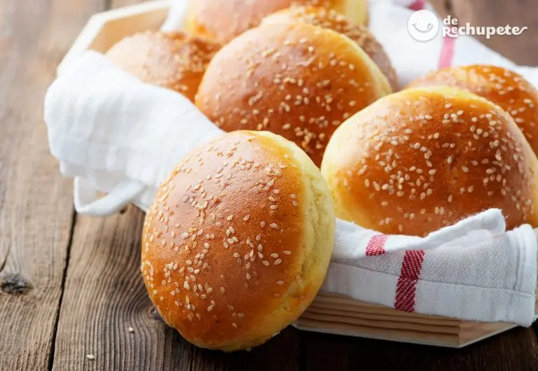

Contamos con los mejores insumos para nuestras hamburguesas, siendo todos nuestros vegetales totalmente orgánicos, y elegidos especialmente por nuestro equipo en la cocina.
La carne con la cual trabajamos es de primera calidad, y siempre se escogen los mejores cortes para nuestros clientes.
Pero no solo contamos con carne, nuestros clientes veganos y vegetarianos cuentan con las mejores legumbres del mercado para que puedan elegir el sabor que quieran en su hamburguesa.

Nuestro pan casero es amasado con un día de anticipación para que tenga la esponjosidad y el sabor que acompañe a nuestras hamburguesas y, por supuesto, está realizado con los mejores ingredientes que se encuentran dentro del mercado.
Finalmente, las papas con las que acompañamos nuestras hamburguesas son escogidas con especial rigurosidad, para que a la hora de freírse sean crocantes y deliciosas.